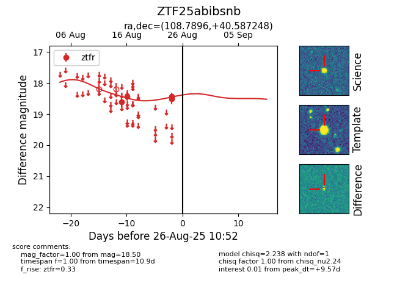

Target ZTF25abibsnb at 2025-08-26 10:55, see:
FINK: fink-portal.org/ZTF25abibsnb
Lasair: lasair-ztf.lsst.ac.uk/objects/ZTF25abibsnb
ALeRCE: alerce.online/object/ZTF25abibsnb
alt names
ZTF25abibsnb (ztf,fink)
coordinates:
equatorial (ra, dec) = (108.7897,+40.58715)
galactic (l, b) = (177.2081,+21.49955)
photometry
last ztfr=18.50
4 ztfr detections
